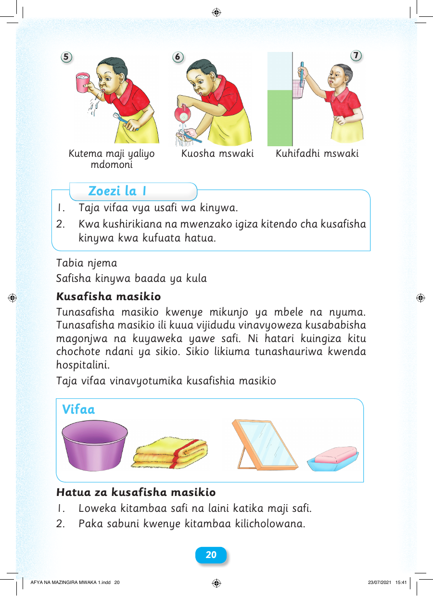

5 6 7 Kutema maji yaliyo Kuosha mswaki Kuhifadhi mswaki mdomoni Zoezi la 1 1. Taja vifaa vya usafi wa kinywa. 2. Kwa kushirikiana na mwenzako igiza kitendo cha kusafisha kinywa kwa kufuata hatua. Tabia njema Safisha kinywa baada ya kula Kusafisha masikio Tunasafisha masikio kwenye mikunjo ya mbele na nyuma. Tunasafisha masikio ili kuua vijidudu vinavyoweza kusababisha magonjwa na kuyaweka yawe safi. Ni hatari kuingiza kitu chochote ndani ya sikio. Sikio likiuma tunashauriwa kwenda hospitalini. Taja vifaa vinavyotumika kusafishia masikio Vifaa Hatua za kusafisha masikio 1. Loweka kitambaa safi na laini katika maji safi. 2. Paka sabuni kwenye kitambaa kilicholowana. 20 AFYA NA MAZINGIRA MWAKA 1.indd 20 23/07/2021 15:41